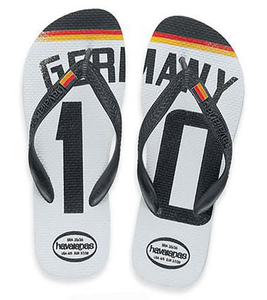

Havaianas и Ipanemas — настоящая бразильская обувь.
Тот, кто был в Бразилии, а особенно в теплых (по их меркам, конечно) регионах, обязательно должны были обратить внимание на обувь, в которой ходят бразильцы. Практически круглый год они ходят во вьетнамках или, как их еще называют за характерный звук при ходьбе — «flip-flop». После посещения Баии у меня сложилось впечатление, что:
а) Доход от продаж вьетнамок составляет значительную часть бюджета страны. Они продаются везде — начиная от дорогих специализированных фирменных магазинов и заканчивая стойками в аптеках.
б) В Бразилии всего 2 фирмы, которые производят их — Havaianas и Ipanema.
Немного о них, не только от меня.
Ipanema flip-flop.
Созданы в 1971 году и на данный момент являются одними из лидеров этого рынка. Кроме того, что они невероятно удобны, они еще и сделаны из экологически чистых материалов и в добавок ко всему еще и из переработанных радиоактивных отходов. Шутка. Просто из продуктов вторичной переработки. Написано даже „suitable for vegetarians“.
В 2002 году Ipanema подписали контракт с бразильской моделью Gisele Bündchen, которая является до сих пор лицом (ногами?) этого бренда. Известна эта модель тем, что она является самой высокооплачиваемой моделью в мире и находится на 16 м месте в списке самых богатых женщин в сфере развлечений.
По-большому счету, это почти всё, что я смог найти об Ipanema flip flop.
Единственный сайт, который я нашел об этих тапках — сайт английского реселлера.
P. S. Кстати, у них есть коллекция с бразильским флажком, которая так полюбилась капоэйристам из России.
Havaianas.
Тут всё значительно интересней и информации значительно больше. Для начала очень советую вам посетить их сайт. Сайт очень яркий, креативный и интересный. Он в полной мере отражает подход этого бренда к своей рекламной стратегии.
Немного истории этого бренда. Он был создан в 1962 году компанией Alpargatas. Основой для дизайна послужили зори — традиционные японские сандалии с подошвой из рисовой соломы. Именно поэтому на современных Havaianas на подошве текстура в виде рисовых зернышек. Это одна из отличительных особенностей это марки. Уже в 70х годах тапки начали вовсю подделывать и фирма запустила рекламный слоган «Havaianas. The real ones».
В 90х годах оборот бренда составил 70 миллионов пар в год. Недовольные подобным, поистине удручающим, ходом дел, компания решила расширить свою целевую аудиторию (изначально они позиционировались как недорогая обувь для рабочего класса) и запустила рекламную кампанию «Havaianas. Everyone wears them.» созданную AlmapBBDO.
Кампания была крайне успешной и уже на следующий год компания удвоила продажи, а богатые люди действительно стали носить Havaianas.
C течением времени бренд развивался и совершенствовался. В 1994 году они стали раскрашивать и внутреннюю часть шлепанца, а сделав в 1998 году к кубку мира по футболу, который проходил в Бразилии, коллекцию с флажками они действительно завоевали мир став одним из символов Бразилии в мире:
The '98 World Cup wasn't ours, but Havaianas will be ours forever.

В 2000х Havaianas успели побывать партнером церемонии награждения Oscar, сделать коллекцию с брильянтами и позолоченными элементами и начать продаваться уже в 60 странах мира. В 2004 году вышла коллекция на высокой платформе со слоганом „Wonderbra for feet“, а в 2006 году — коллекция с узкими ремешками с очень креативной рекламной кампанией и с очень интересными слоганами.
Только в 2008 году компания открыла европейское представительство в Мадриде.
В 2009 году Havaianas с помпой открыли свой собственный отдельный магазин Espaço Havaianas в Sao Paulo в котором выставлены первый вариант тапок, а так же все выходившие коллекции, дизайнерские и кастомные расцветки шлепанцев. Самое странное, что несмотря на то, что мы были в Бразилии в их лето, но как раз в Sao Paulo мы людей в Havaianas и не видели. Иногда было такое ощущение, что мы единственные, кто ходит в такой обуви там.
Эта обувь по-истине является символом Бразилии. А кроме того она еще и удобная и красивая. Havaianas можно найти в магазинах Питера и Москвы. Для сравнения могу сказать примерные цены на них в Бразилии — самая дешевая пара простых тапок с бразильским флажком стоит 7-8 реалов (примерно 3-3,5 доллара), дизайнерские с рисуноком — 20 реалов (примерно 8 долларов). Это шикарный сувенир из Бразилии, смело покупайте всем друзьям. Поверьте, мы именно так и поступили.
Пост написан по мотивам и под впечатлением от статьи Как в Хаваинас «обули» весь мир. Рекламная история легендарных сандалий Havaianas. Там много принтов, видео-роликов и рекламных слоганов. Очень советую прочитать.